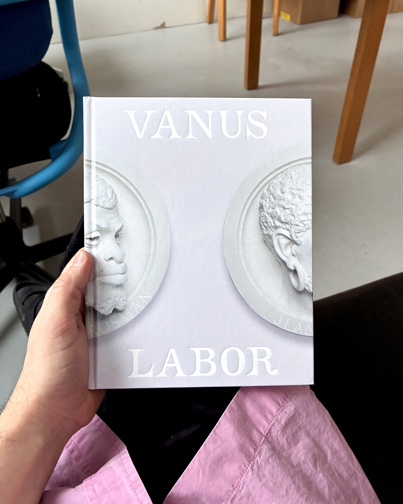
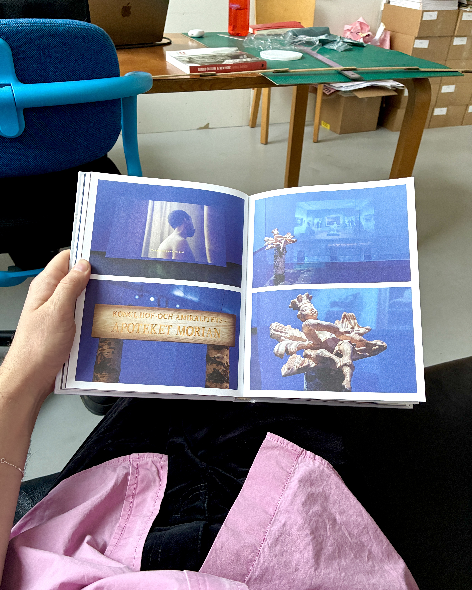
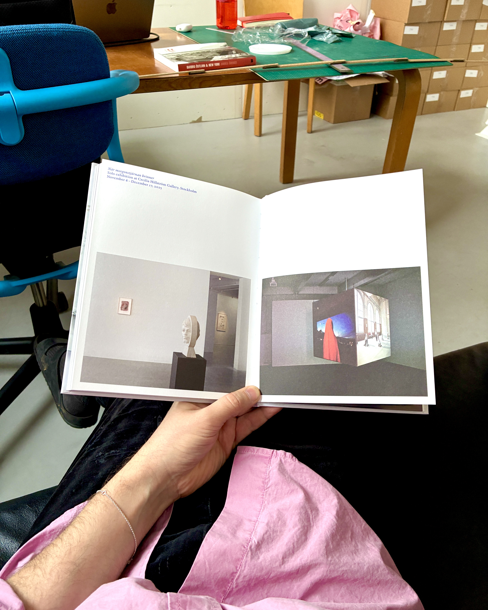
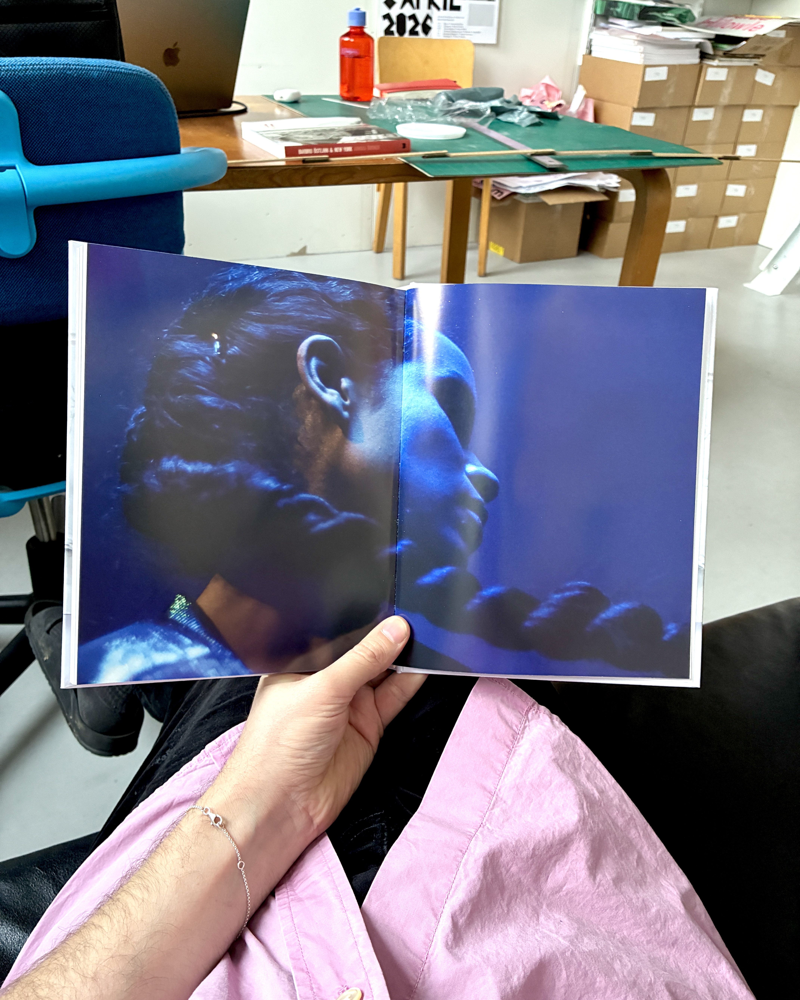
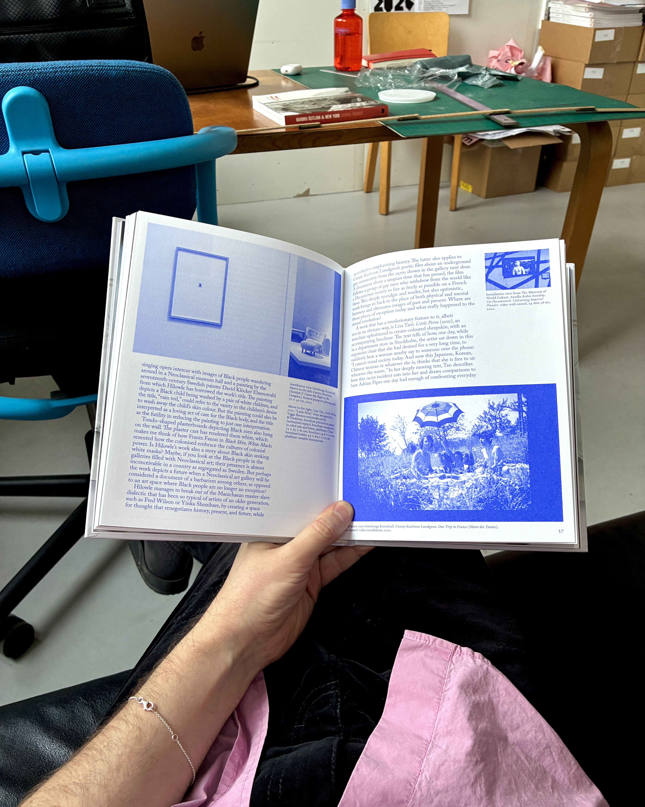
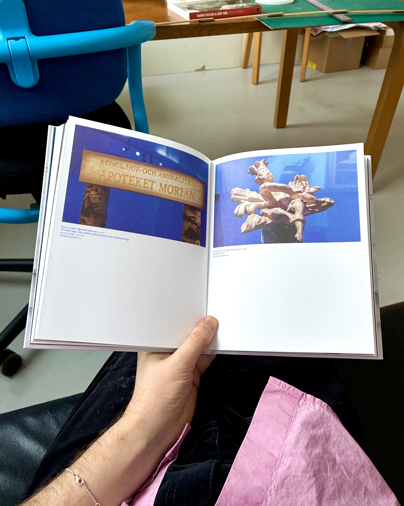

OSKAR LAURIN
(Stockholm)
1 January 2006

Salad Hilowle, Vanus Labor, Otsium books, 2026
Salad Hilowle — Vanus Labor is a book that follows the artwork of the same name from 2021 to the present and serves as a document of the work’s trajectory, reception, and significance. The publication consists of republished texts from the original self-produced exhibition catalogue (2021), texts from different moments in the work’s development, transcribed conversations, as well as newly commissioned texts.
With texts contributions by, among others, Maria Lind, Fredrik Svensk, Ulrika Flink, Mårten Snickare, Håkan Nilsson, Tina M. Campt, Sagal Farah, Sinziana Ravini, Isabella Nilsson, and Salad himself, the book aims to capture a pivotal moment in Swedish art history. Using Salad’s work as a lens, it illuminates the discussions that emerged around the exhibition at the Royal Academy of Fine Arts, where questions of Black Swedish art history intersected with a broader and vibrant debate on the conditions, responsibilities, and purposes of art education and art institutions.





New York City – 1 January 2027
Positioned between the American and European avant-gardes, Barbro Östlihn developed a distinctive painterly style outside established movements. She arrived in New York in 1961 with her husband, Öyvind Fahlström, moving into Robert Rauschenberg’s former loft in South Manhattan.

New York skyline.
Positioned between the American and European avant-gardes, Barbro Östlihn developed a distinctive painterly style outside established movements. She arrived in New York in 1961 with her husband, Öyvind Fahlström, moving into Robert Rauschenberg’s former loft in South Manhattan. Fascinated by the city’s architecture and constant construction, Östlihn created works on the margins of pop art, photographing façades by day and painting them by night. Throughout the 60s, she exhibited at Galerie Cordier & Ekstrom, Tibor de Nagy, and Marian Goodman, earning praise from critics like Barbara Rose and Donald Judd. Although retrospectives have begun to bring her work wider recognition, no comprehensive monograph on her work exists. I am beginning such a project in dialog with Annika Öhrner, author of Barbro Östlihn & New York and curator of several Östlihn exhibitions, including Stockholm–New York–Paris at the Institut suédois in Paris. For which I was the designer. I am interested in how publishing and exhibition practices can serve as platforms for collaboration and recontextualization (see work samples X–X). With the support of IASPIS and ISCP, I aim to retrace Östlihn’s steps in New York: walking, photographing, and connecting by day, processing through graphic design by night. I will also visit relevant archives and collections. My ISCP studio would serve as an open, expanded editorial space, exploring Östlihn’s life while reflecting on the changing relationship between artists, the city, and public space. The idea would be to publish continuously throughout the residency, making a series of smaller publications and experiments from which a larger work on Östlihn can emerge. Östlihn was at the center of international exchange. As a resident I hope to engage with that same spirit of exploration and dialogue, through which I hope to gain an international perspective on Östlihns work
This is small text.